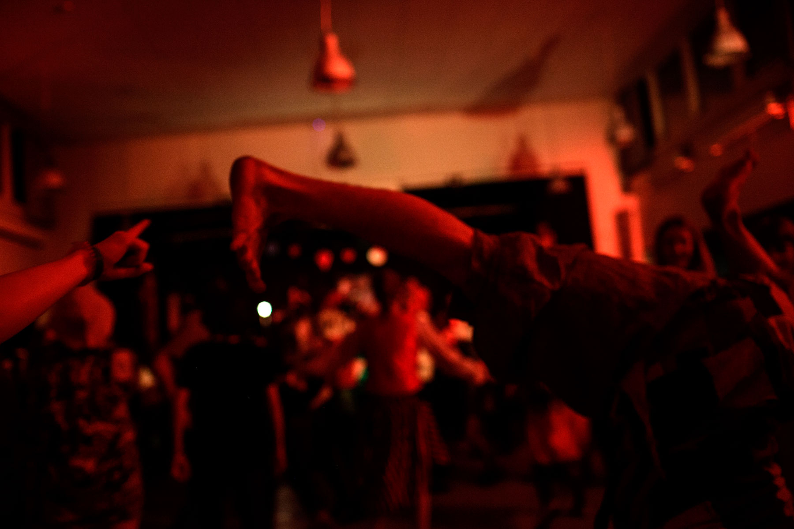

Hvad er ROD?
ROD er et tilbagevendende årligt folkemusikstævne for alle unge mellem 15 og 25 år. Næste stævne vil finde sted lørdag d. 19. marts - 25. marts 2016, i påsken.
På ROD vil du finde lige mængder af nybegyndere, helt uden kendskab til folkemusik, let øvede musikere og garvede musikere. Dét der forener os er kærligheden til folkemusikken og lysten til at spille og udleve den sammen i fællesskab.
Som deltager bliver du placeret i en mindre gruppe med 10-15 andre deltagere. Sammen skal I, som band, arrangere og øve et par numre, på baggrund af de ideer, melodier og sange I hver især har medbragt hjemmefra. Dette kalder vi “Gruppespil.” En anden stor del af programmet på ROD er “Storspil.” Her er alle deltagere på stævnet samlet for at spille sammen som ét kæmpe orkester, under ledelse af de instruktører, som Arbejdsgruppen bag årets ROD har hyret.
Resultaterne af ugens arbejde vil blive opført ved en offentlig begivenhed i løbet af torsdagen - den 18. marts, kaldet “ROD-dagen”. Her inviterer vi offentligheden indenfor, og både venner, familie og folk med almen interesse for den unge sprudlende folkemusik kan komme forbi til en dag fuld af workshops og koncerter. Hold dig opdateret om ROD-dagens program her på hjemmesiden.
I løbet af ugen vil der desuden være forskellige workshops, hvor du kan lære en masse om forskellige grene af folkemusikken og forskellige danse. Emnerne på disse workshops varierer fra år til år, men det kunne f.eks være: Sønderhoning (traditionel folkedans fra Fanø), balladesang eller folkemusik fra balkan.

Efter dagens program er der dømt fri leg med mulighed for at hygge sig med de øvrige deltagere, danse, være med i jams og feste til langt ud på natten.
Så er du mellem 15 og 25 år, og har lysten til at spille folkemusik, så tøv ej: grib instrumentet eller stemmen og bliv en del af vores fantastiske, skøre og dejlige flok af rødder! Her er der plads til alle!